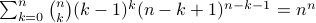

Sudeep Kamath – MiscellaneousMy kid brother
One of my favorite proofs in mathematicsThe Kneser graph conjecture proved by László Lovász. If you haven't seen it before, and have 15 minutes to spare, check out a simplified proof here. Story of a combinatorial identityHere is a fun little story of how I discovered a nice combinatorial identity when I was an undergraduate student intern at Stanford in the summer of 2007: . I posted this identity on the Piazza for the CS70 class at UC Berkeley, Spring 2013 offering a prize money of $100. It was successfully solved by one of the undergraduate students and there was substantial effort put by many other students. Through this process, I discovered many different proofs of this identity. MusicI dabble at music. I enjoy playing music with friends, and occasionally record using GarageBand. Below is a sample. For more recordings, please see my soundcloud page. ITA videoMy video submission for the ITA workshop 2014 that won the best video award. Henri's voice was provided by Venkat Anantharam. QuotesYour calendar never lies. All we have is our time. The way we spend our time IS our priorities, - Tom Peters The critics say that in composing The Rake I borrowed from Mozart. I do not borrow from - Igor Stravinsky Take your victories when you get them. Beware of the man who works hard to learn something, learns it, and
finds himself no wiser - Kurt Vonnegut, Cat's Cradle LinksAcademic: Non-academic: |